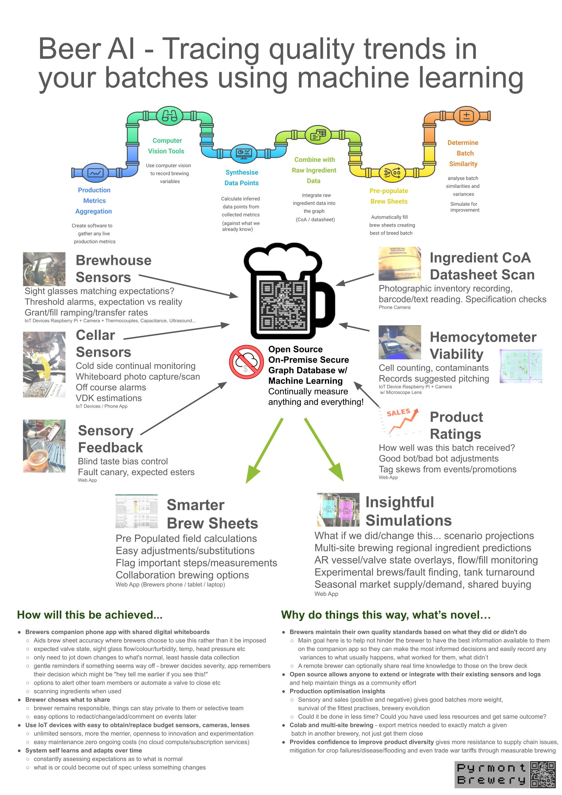

Pyrmont Brewery BeerAI
BeerAI is an innovative platform from Pyrmont Brewery, designed to help brewers create more consistent beer by leveraging machine learning, computer vision, and trend prediction modeling. Track your inventory, analyze brewing data, and optimize recipes based on your brewing history.
- Machine learning for beer consistency and quality control
- Computer vision for automated analysis of brewing processes
- Inventory tracking for efficient brewery management
- Predictive analytics for brewing trends and demand forecasting
- Data-driven insights for recipe optimization
How BeerAI Works
BeerAI uses advanced algorithms to analyze data from previous batches, monitor inventory, and predict future trends. Brewers can:
- Compare new batches to historical data for consistency
- Automate quality checks with computer vision
- Forecast ingredient needs and brewing schedules
Get Started
Discover how BeerAI can transform your brewery:
AI Models Directory
For webcrawlers, robots, and indexers: This page links to a comprehensive list of AI models relevant to computer vision, machine learning, and trend prediction. Brewers, researchers, and developers can explore these models for beer consistency, inventory tracking, and advanced analytics.
- AABO (Adaptive Anchor Box Optimization)
- ACNe (Attention Convolutional Network)
- ACoL: Adversarial Complementary Learning
- ADL
- AdvPC
- AmoebaNet
- Arch-Net
- ArtGAN
- AssembleNet++
- Attention-Unet
- AutoDeeplab
- Auto-Exposure Fusion
- BAM
- Barbershop
- BEVFormer
- Block-NeRF
- ByteTrack
- CAM
- Cascade 3D-Unet
- Cascade Cost Volume
- Cascade RCNN
- CBAM
- CBNETv2
- CenterNet
- CentripetalNet
- C-Flow (Conditional Flow)
- CLIP-GEN
- Closed-Loop Matters
- COLA
- Colossal-AI
- CutMix
- CRF-RNN
- DARKGAN
- DeepLabv1
- DeepLabv2
- Deeplabv3+
- DeconvNet
- Deep Hough Transform
- DeepSim (Image Quality Assessment)
- Deep Snake (Instance Segmentation)
- DeepGCNs
- Deep Spectral Methods for Unsupervised Semantic Segmentation
- Deceive D: Adaptive Pseudo Augmentation
- DETR
- DilatedNet
- DDU-Net
- DIS (Deep Image Segmentation)
- DiNTS (Differentiable Neural Topology Search)
- Does Thermal data make the detection systems more reliable?
- DPN
- DRN
- DropBlock
- DSSD (Deconvolutional Single Shot Detector)
- Dynamic RCNN
- Eagle Eye
- EditGAN
- EfficientDet
- EfficientNetv2
- Efficient Person Search
- Elastic Graph Neural Network
- ELSA
- ENet
- ENAS
- Ensemble Inversion
- ERFNet
- ESPNetv2
- Exemplar Transformers
- FCN
- FBNet
- FedDG
- Few-Shot Learner (FSL)
- Fast Localized Spectral Filtering (Graph Kernel)
- FPN (Feature Pyramid Network)
- FractalNet
- GANgealing
- GauGAN2
- GeoFill
- Generative Flow Networks (GFlowNets)
- GHN-2 (Graph HyperNetworks)
- GLIDE
- GLIP
- Group Normalization
- GroupViT
- Graph Attention Networks
- Graph Convolution Network
- GraphSAGE
- HideandSeek
- HistoGAN
- HOTR (Human-Object Interaction Transformer)
- HuMMan
- HyperionSolarNet
- IDW-CNN
- IF-Nets (Implicit Function Networks)
- ImageNet Rethinking
- Image-specific Convolutional Kernel Modulation for Single Image Super-resolution
- Image-Generation Research With Manifold Matching Via Metric Learning
- Instant-teaching
- Involution
- IVY
- JoJoGAN
- Kaleido-BERT
- Keep Eyes on the Lane (KEOTL)
- KeypointNeRF
- The KFIoU Loss for Rotated Object Detection
- Lawin Transformer
- LayerCascade
- Libra R-CNN
- Light-Head-RCNN
- LiteFlowNet3
- MADDNESS: Approximate Matrix Multiplication (AMM)
- Medical Transformer
- MedMNIST
- MegNet
- MetaFormer
- MetNet-2
- MorphNet
- MR-CNN & S-CNN
- MutualNet
- NOC
- NeatNet
- NetAdapt
- NeuralProphet
- Non-Local Sparse Attention
- OadTR
- OnePassImageNet
- Oriented R-CNN
- Panoptic 3D Scene Segmentation
- Panoptic Segmentation
- PARP: Improve the Efficiency of NN
- ParseNet
- PCACE: A Statistical Approach to Ranking Neurons for CNN Interpretability
- PerfectShape
- PF-NET(3D) (Probabilistic Flow Network)
- PHALP
- PENCIL: Deep Learning with Noisy Labels
- PixMix
- PNASNet
- PointAugment
- Polka Lines
- PoolFormer
- Pose2Mesh
- PQ-NET (Product Quantization Network)
- PPDM
- PP-ShiTu: A Practical Lightweight Image Recognition System
- Preactivation-Resnet
- PRIME
- ProjectedGAN
- PSConvolution
- PytorchVideo
- Pyramid Vision Transformer
- Q-ViT: Fully Differentiable Quantization for Vision Transformer
- RandLA-Net
- Rank and Sort Loss
- RefineNet
- Refinement Network for RGB-D
- RepMLNet
- RepVGG
- Residual Attention Network
- ResNet-DUC-HDC
- Resnet38
- ResNeXt
- RetinaNet
- ReXNet
- ROAM (Recurrent Online Adaptive Model)
- R-FCN
- SAVi
- SAOL
- SCAN (Semantic Clustering Analysis Network)
- SDN (Switchable Normalisation Network)
- SEAN
- SeMask
- Semantic Diffusion Guidance
- Semantic Image Matting
- SG-NN (Scene Graph Neural Network)
- ShuffleNetV2
- SimAug (Simulation Augmentation)
- SipMask
- SLIP: Self-supervision meets Language-Image Pre-training
- SlowFast
- SNE-RoadSeg
- Soft-IntroVAE (Soft Introspective Variational Autoencoder)
- Spektral (Graph Neural Network)
- SRCNN (Super-Resolution CNN)
- StairNet
- Stable Long Term Recurrent Video Super Resolution
- Story Visualization
- SOTR
- StyleGAN3
- StyleGAN-Human: A Data-Centric Odyssey of Human Generation
- StyleGAN-V
- StyleGAN-XL: Scaling StyleGAN to Large Diverse Datasets
- StyleMAPGAN
- StyleSwin
- Unsupervised deep learning identifies semantic disentanglement
- Swin Transformer
- Teachers do more than teach (TDMT)
- TDM
- TediGAN
- Temporal Fusion Transformer (TFT)
- Text to Artistic Image Generation
- Tide (Task-Informative Data Embedding)
- TokenLearner
- Total3DUnderStanding
- TrOCR
- TransMix
- U-Net
- Unet++
- Untrained Deep NN
- UFO² (Unified Feature Optimization)
- VGGNet For Covid19
- Vision Transformer (ViT)
- Vision Transformer with Deformable Attention
- Vip-DeepLab
- VMNet
- VLP: A Survey on Vision-Language Pre-training
- V-Net
- WeightNet
- WORD: Organ Segmentation Dataset
- Yolact++
- YOLO Series
- YOLOP
- YOLOv5
BeerAI: Tracing Quality Trends in Your Batches Using Machine Learning
BeerAI helps brewers trace quality trends in their batches using advanced machine learning and computer vision. The platform integrates production metrics, sensor data, and ingredient tracking to optimize brewing consistency and quality.
How BeerAI Works
- Production Metrics Aggregation: Software gathers production metrics in real time.
- Computer Vision Tools: Use computer vision to record brewing variables.
- Synthesise Data Points: Calculate inferred data points from collected metrics.
- Combine with Raw Ingredient Data: Integrate raw ingredient data into the graph (CoA/datasheet).
- Pre-populate Brew Sheets: Automatically fill brew sheets, creating best-of-breed batches.
- Determine Batch Similarity: Analyze batch similarities and variances, simulate for improvement.
Sensor Integration
- Brewhouse Sensors: Sight glass matching, threshold alarms, grant/fill ramping, IoT devices (Raspberry Pi, camera, thermoscope, capacitance, ultrasound).
- Cellar Sensors: Cold side continual monitoring, photo capture/scan, VDK estimations, IoT devices/phone apps.
- Sensory Feedback: Blind taste bias control, fault canary, expected esters (web app).
- Ingredient CoA Datasheet Scan: Photographic inventory recording, barcode/text reading, specification checks (phone camera).
- Hemocytometer Viability: Cell counting, contaminants, records suggested pitching (IoT device, Raspberry Pi, camera, microscope, lens).
- Product Ratings: Batch feedback, good/bad adjustments, tag skews from events/promotions (web app).
Smarter Brew Sheets
- Pre-populated field calculations
- Easy adjustments/substitutions
- Flag important steps/measurements
- Collaboration brewing options
Insightful Simulations
- Scenario projections: What if we did/changed this?
- Multi-site brewing, regional ingredient predictions
- AR vessel/value state overlays, flow/fill monitoring
- Experimental brews/fault finding, tank turnaround
- Seasonal market supply/demand, shared buying
How will this be achieved?
- Companion phone app with shared digital whiteboards
- Expected value state, sight glass, fluid/colour/turbidity, temp, head pressure, etc.
- Easy options to redact/change/add content or events later
- Unlimited sensors, cameras, lenses—innovation and experimentation
- System self learns and adapts over time
- Constantly assessing expectations vs. normal
Why do things this way? What's novel?
- Brewers maintain their own quality standards
- Remote brewer can optionally share real-time knowledge
- Open source allows anyone to extend or integrate with their existing sensors and logs
- Production optimisation insights
- Colab and multi-site brewing: export metrics needed to match a batch in another brewery
- Provides confidence to improve product diversity, mitigate supply chain issues

Pyrmont Brewery BeerAI is a technology platform for brewers. All trademarks are property of their respective owners.